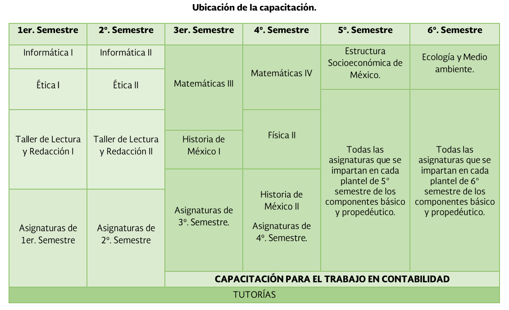
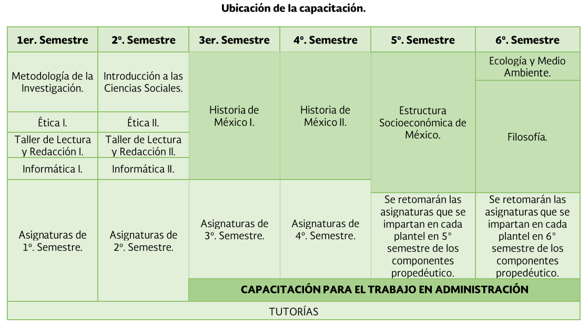
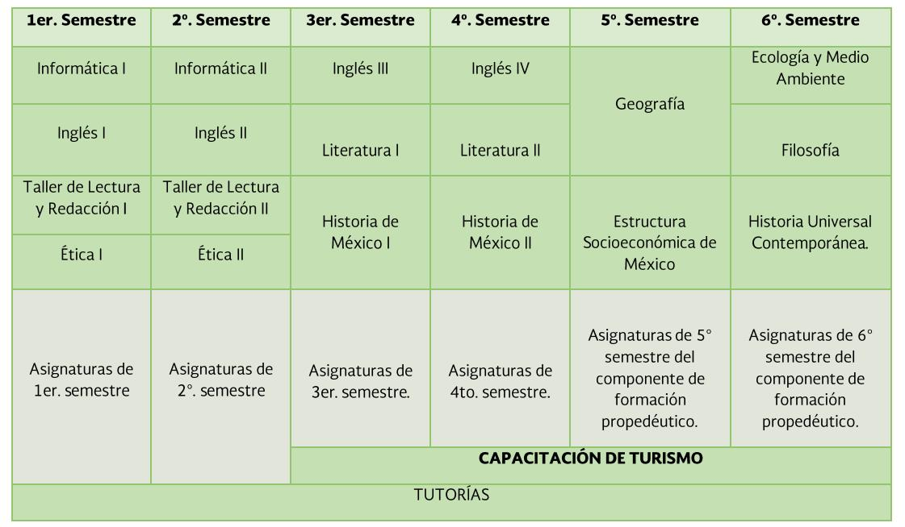
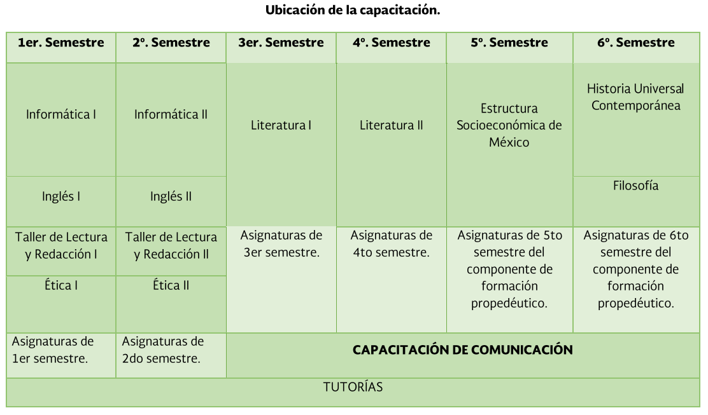

Capacitaciones en el plantel Cancún 2
Cuenta con 5 capacitaciones de las cuales el alumo deberá elegir a finales de su segundo semestre la que más le atraiga o convenza para empezara tomarla a partir de su tercer semetre
-
Tecnologias de la informacion y la comunicación
En la capacitación de Tic se aprende desde ¿Qué es una computadora?, hasta a crear un sitio web;en esta capacitación se obtiene un conocimiento basico-intermedio de word,power point, excel,de lenguaje informatico como html,css,a resolver,analizar y crear diagramas de flujo que den respuesta a ciertos cuestionamientos.

-
Contabilidad
En esta capacitacion el estudiante aplica procesos contables y administrativos patra el uso de la informacion financiera, la cual debe ser veraz y confiable a la hora de toma de desiciones en beneficio de la empresa a la que se trabaje.
El estudiante desarrolla un pensamiento critico con vision emprendedora sobre ciertos factores queinfluyen en la productividad y competitividad de una organizacion -
Administración
Permite a los alumnos representar la realidad de su entorno social para transformarla mediante la apropiacion de conocimientos, descubrimiento de significados, generacion de ideas y la transmision eficas.
en esta capacitación en estudiante estructura o crea proyectos sustentables,viables y factibles con una vision emprendedora -
Turismo
En esta capacitacion el estudiante desarrolla las habilidades de comjunicacion en ingles en el sector turistico, implementando tecnicas y procesos de comunicacion del discurso linguistico en ingles.
Se desarrolla las habilidades fundamentales del sector social-productivo, como el liderazgo, autoaprendizaje, comunicación asertvia, integracion , etc. -
Comunicación
En esta capacitacion se desarrollan los conocimientos y habilidades para analizar, elaborar y diseñar mensajes utilizando medios de comunicacion como la radio, television, impresos, etc., partiendo de la base del proceso comunicativo para estructurar planes de promocion integral.
se realizan productos diversos como:textos,discursos,graficos y audiovisyales innovadores como impacto masivo qeu alcance las expextativas de la organizacion.